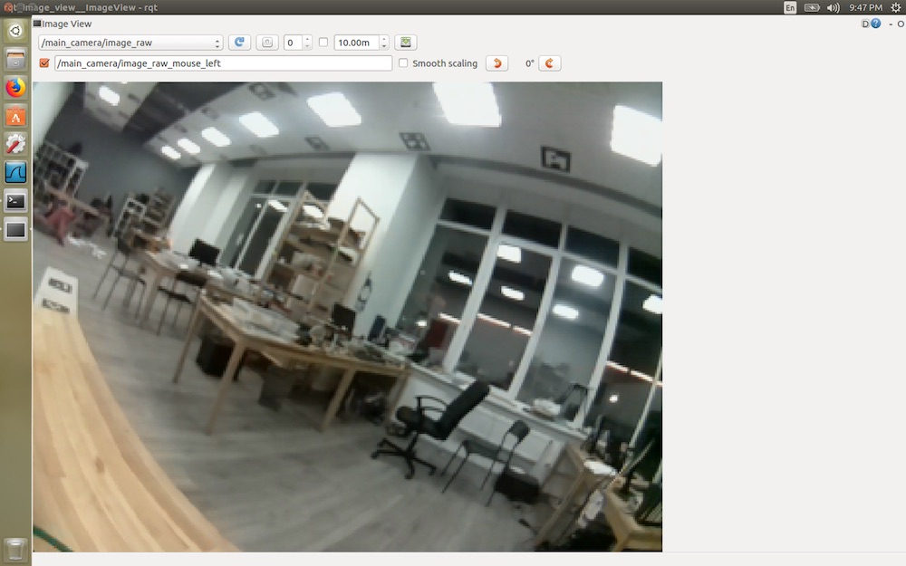
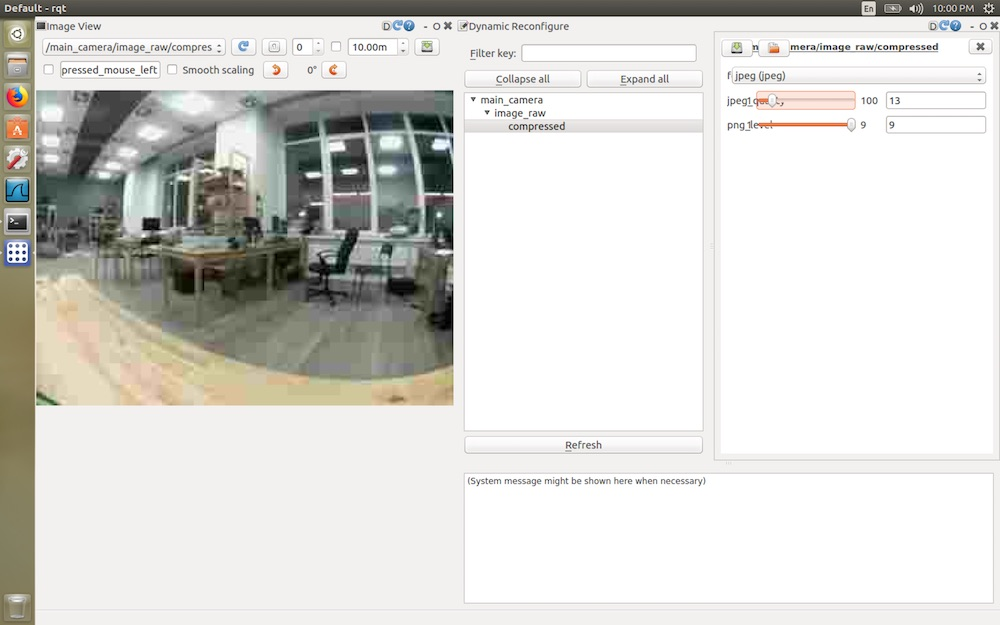

Viewing images from cameras
To view images from cameras (or other ROS topics), you can use rviz, rqt, or watch them in a browser using web_video_server.
See read more about using rqt.
Viewing in a browser
Configuration
Make sure that in Clever launch-file (~/catkin_ws/src/clever/clever/launch/clever.launch), starting web_video_server is enabled:
<arg name="web_video_server" default="true"/>
After the launch-file is edited, restart package clever:
sudo systemctl restart clever
Viewing
To view a video-stream, you have to connect to Wi-Fi of Clever (CLEVER-xxxx), navigate to page http://192.168.11.1:8080/, and choose the topic.

If the image is transmitted too slow, you can speed it up by changing GET parameter quality (from 1 to 100), which is responsible for video-stream compression, for example:
http://192.168.11.1:8080/stream_viewer?topic=/main_camera/image_raw&quality=1
At the URL above, a stream from the main camera will be available in the minimum possible quality.
Parameters width, height, etc. re also available. Read more about web_video_server: http://wiki.ros.org/web_video_server.
Browse with rqt_image_view
To browse images with the rqt tools the user needs a computer with Ubuntu 16.04 и ROS Kinetic.
Connect to the Clever Wi-Fi network an run rqt_image_view with its IP-address:
ROS_MASTER_URI=http://192.168.11.1:11311 rqt_image_view
Choose a topic for browsing, for example /main_camera/image_raw:

To reduce network load and reduce latency, use a compressed version of the topic – /main_camera/image_raw/compressed.
To change the compression settings use the rqt-plugin Dynamic Reconfigure:

Refer to more about rviz and rqt.